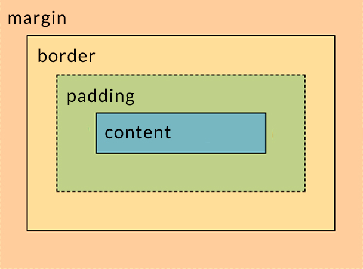

Представьте себе процесс строительства дома. Условно его можно разделить на несколько этапов: возведение структуры дома и его отделка. При возведении дома мы заливаем фундамент, возводим стены, устанавливаем крышу. После этого уже переходим к покраске дома, устанавливаем окна и занимаемся декорированием.
Процесс создания верстки можно описать похожими процессами. В ней так же важна роль возведения структуры и отделки. Для этого существуют несколько основных типов элементов:
Важно: сами по себе элементы HTML не являются блочными или строчными. HTML — всего лишь разметка. За то, будет элемент блочным или строчным, отвечает CSS. Для всех HTML-тегов существуют стандартные модели вывода, которые по умолчанию настроены в браузере, поэтому понятие блочных и строчных элементов обычно соотносят с определенными тегами, так как они имеют стандартное поведение при добавлении на страницу.
Основная особенность блочных элементов — они занимают всю доступную им ширину. Из-за этого другие элементы до и после блочных элементов не встают в один ряд с ними, а располагаются до или после них, но уже на другой строке.
Стоит отдельно отметить понятие «занимает всю доступную ширину». Что же именно скрывается за этой доступной шириной? Ширина всей страницы, ширина экрана или ширина дороги близ деревни Ракушки? На самом деле доступная ширина — вся доступная ширина родителя. То есть, если наш блок лежит внутри <body>, то эта ширина будет равна именно ширине <body>. Стоит изменить ширину <body>, так сразу изменится и ширина блочного элемента внутри.
Внутрь блочных элементов мы можем вкладывать другие блочные элементы, причем до бесконечночти Это позволяет нам делать сложную верстку, оперируя различными компонентами, которые будут созданы.
See the Pen Untitled by Vyacheslav (@VyacheslavMaksimovich) on CodePen.
Важно: хоть HTML и позволяет бесконечно вкладывать блоки друг в друга, лучше сохранять здравый смысл. Дело в том, что процесс вывода верстки достаточно долгий для браузеров. На это тратится довольно много ресурсов. И чем больше вложенность блоков друг в друга, тем сложнее браузеру и компьютеру все это обработать.
Вложенность блочных элементов друг в друга ограничена только несколькими пунктами:
Для создания блочного элемента используется тег <div>. Он не имеет никаких дополнительных стилей,кроме блочного отображения. Этим тегом оборачивается связанная информация, создаются каркасы компонентов. Но тег не является семантичным, то есть не несет смысловой нагрузки. Подробнее о семантических элементах будет в следующем уроке.
Строчные элементы являются отделочным материалом, с помощью которого мы можем выделить участки текста, или добавить немного логики, как в случае со ссылками. Строчные элементы противоположны блочным. Они не занимают всю доступную ширину и из-за этого не происходит переноса соседних элементов.
Давайте добавим в прошлый пример строчный элемент :
See the Pen Untitled by Vyacheslav (@VyacheslavMaksimovich) on CodePen.
Что произошло? Мы обернули слово здесь в ссылку, которая уведет пользователя в то место, которое мы укажем. Что произойдет в браузере при добавлении этого тега? Ссылка станет синего цвета и появится подчеркивание. Но сам текст останется на месте, так как ширина ссылки будет равна ширине слова здесь.
Это главная отличительная черта строчных элементов. Помимо этого есть важная особенность, связанная с применением свойств width и height в CSS. Для строчных элементов эти свойства не работают. Их применение не даст никакого эффекта.
Так же, как и блочные элементы, мы можем вкладывать строчные элементы внутрь строчных. Это распространенная практика, которая вам пригодится. Например:
See the Pen Untitled by Vyacheslav (@VyacheslavMaksimovich) on CodePen.
Важно: не вкладывайте внутрь строчных элементов блочные. Это нарушает семантику и усложняет чтение кода
Еще до работы с CSS полезно понимать, как браузер выводит элементы на вашу страницу. Помимо естественных свойств высоты и ширины, любой элемент на странице может иметь следующие свойства:
Каждое из них не просто выполняет ту функцию, которая указана, но и напрямую влияет на конечные значения высоты и ширины элемента.
Представьте, что у нас есть квадрат со стороной 150 пикселей. Мы добавили к нему рамку в 2 пикселя, внутренний отступ в 10 пикселей с каждой стороны и по 20 пикселей внешнего отступа с каждой стороны.
Сколько места будет занимать наш квадрат на странице? Для этого намc просто надо суммировать все значения.
Ширина: 150px (начальная ширина) + 2px (граница справа) + 2px (граница слева) + 10px (внутренний отступ справа) + 10px (внутренний отступ слева) + 20px (Внешний отступ справа) + 20px (Внешний отступ слева) = 214px
Высота: 150px (начальная высота) + 2px (граница сверху) + 2px (граница снизу) + 10px (внутренний отступ сверху) + 10px (внутренний отступ снизу) + 20px (Внешний отступ сверху) + 20px (Внешний отступ снизу) = 214px
Воспользуйтесь любым онлайн сервисом, который умеет преобразовывать HTML разметку. Например CODEPEN, для этого просто нажмите на надпись EDIT ON CODEPEN в блоке с кодом ниже:
See the Pen Untitled by Vyacheslav (@VyacheslavMaksimovich) on CodePen.
Попробуйте изменять блочные и строчные теги, добавлять и удалять их. Посмотрите, как будет меняться поведение. Уделите этому хотя-бы 20 минут.